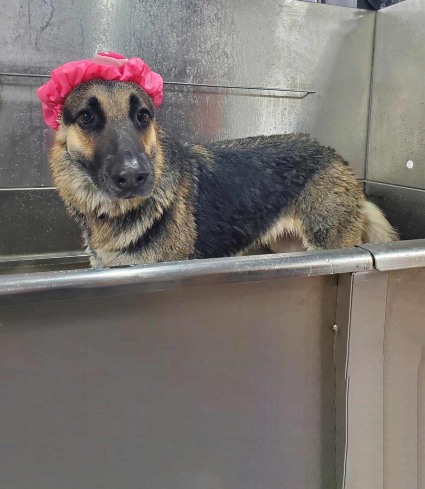
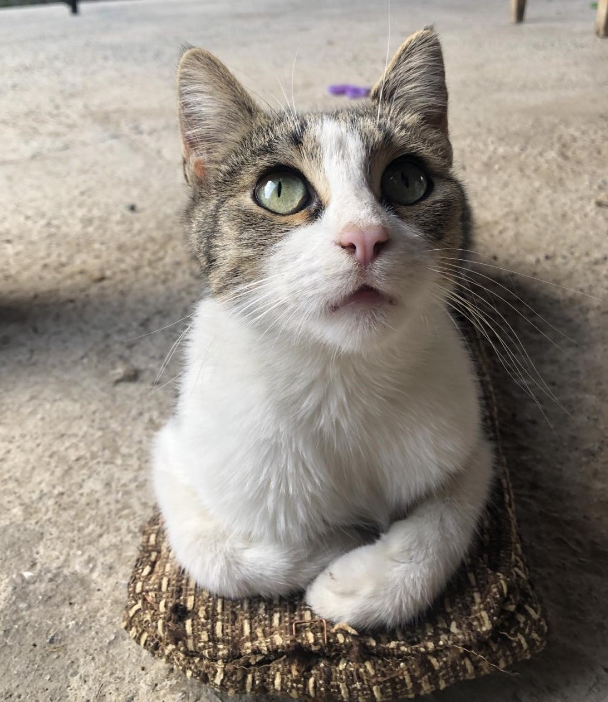
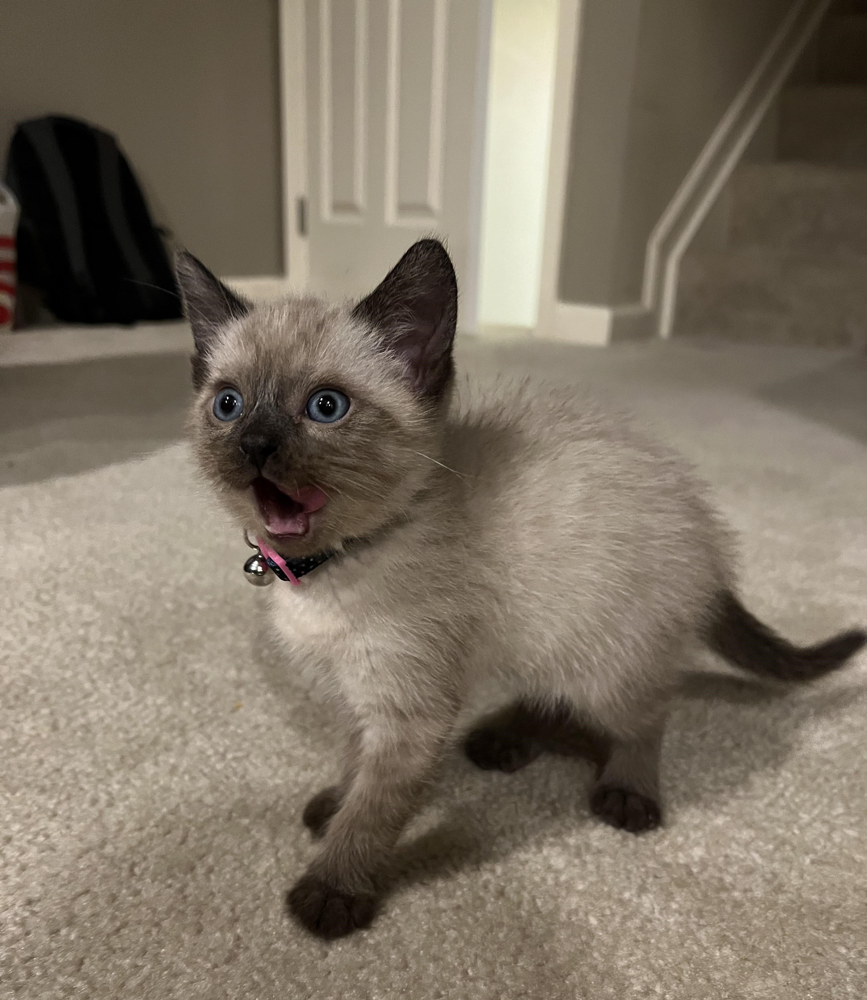

Meet some of our adorable friends

Max
Energetic puppy looking for an active family!
Male
3 years old
German Shepherd

Kira
Sweet and cuddly cat seeking a loving home.
Female
2 years old
European Shorthair

Meowgli
Adorable kitty screaming for cuddles.
Male
2 months old
Asian Siamese
What is our mission?
Our mission is to facilitate meaningful connections between caring individuals and adoptable
pets.
We strive to streamline the adoption process through a user-friendly platform,
promoting responsible pet ownership and providing ongoing support for pet owners.
By doing so, we aim to reduce pet homelessness and contribute to a world where every animal
finds a
loving forever home.